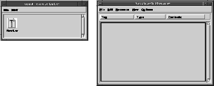
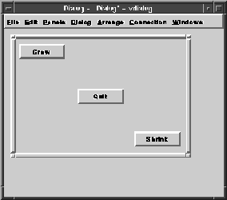

Chapter 5. Resourceful Springs |
In this chapter we are going to modify tut4a to use springs and struts. In doing so we will actually make the program smaller since Galaxy will be handling all dialog resize work. We will use the Visual Resource Builder to lay out our dialog and save it in a resource file which the program will load at run time.
One of the most tedious parts of any program is dealing with size events. It is a nuisance to be forced to decide where and how large each dialog item should become. Size event code must be generated for each dialog and is always different enough that it generally cannot be reused. One of Galaxy's strong points is its ability to allow you to define a set of rules for how dialog items are to be connected and how they should grow. The Spring Manager does this for you. However, the Spring Manager is almost never used directly by the application. Instead you use the Visual Resource Builder to lay out your dialog and allow it to generate a spring solution for you automatically. This is the easiest way to handle dialog resizing for all but the most complex dialogs. Using the Visual Resource Builder gives us several important abilities: we can change much of the layout of the dialog without needing to change or even re-link any code, it eliminates the need to get directly involved in dialog sizing, and it eliminates much of the tedium of setting up a dialog programmatically.
Run the Visual Resource Builder and open the file tut5a.vr. Two dialogs open: the smaller dialog is titled "Visual Resource Builder" and is called the Project Window. The larger dialog is titled with the full pathname of the tut5a.vr file we are creating. We will be using the second dialog which is called a Object Editor.
Figure 4. Project Window and Object Editor

The Object Editor consists of a menu bar with File, Edit, Resource, View, and Options menus and a list where resources are displayed. We haven't created any resources yet so the list is empty.
In this browser dialog, open the Resource Menu and select New. This opens a submenu. Select Dialog from this submenu. This tells the Visual Resource Builder to create a new dialog. There will be a new entry in the list with a tag of Dialog and a type of Dialog.
We are going to change the tag from Dialog to ButtonDialog. Do this by clicking on the first occurrence of the word "Dialog." It will become an editable field. Move the cursor with the arrow keys to the start of the word and type the word Button before "Dialog" so the text now reads "ButtonDialog."
Now double-click outside of the text box (within the list cell) to open the dialog editor. You may also select Edit from the Resource Menu.
We need to get three buttons into the dialog. We do this by dragging a button from the Dialog Item page of the
Object Palette onto the dialog editor window. Click
on the button icon, and while holding down the left mouse button, drag the button into the rectangle inside the dialog window.
Do this two more times, each time positioning the button in approximately the place where we will want it (top left,
center, and lower right). Don't worry about being precise; just get the buttons in the general neighborhood. We'll use
springs and struts to position the buttons exactly where we want them.
Now double-click on the button closest to the top left corner to open the button editor dialog.
We need to change two pieces of information: the tag and the title. Change the tag to grow
and the title to Grow.
Now select the center button in the dialog editor window. The button editor dialog should automatically
change to show that item's attributes. Change its tag to quit and its title to
Quit.
Now select the bottom right button and change its tag to shrink and the title to
Shrink.
You can now close the button editor via File/Close Editor.
You should now have a dialog which looks like this:
Figure 5. Button Dialog

Now select Connection/Show from the dialog editor's menu bar. Select the
Shrink button. The button should now be surrounded by green bars with four
connections coming out of the four sides of the button. These connections determine the button's
position and resize behavior. The connections on the top and left are called struts
and the connections coming out of the bottom and right are called springs.
Struts are fixed length connections. Once set, a strut does not change length when the dialog is resized.
A spring is an adjustable connection which will grow and shrink depending on how the dialog is resized.
The green bars around the button are struts, which are the natural size of the item. The
natural size of an item is defined as the size at which it can best display its
information (buttons, text fields, etc.). That size will vary from item to item. It can also vary for the
same item depending on the font or the look-and-feel in use.
Select the Shrink button, then select the spring coming out of the right side of the Shrink button. (Only the connections for the currently selected dialog item are displayed.) The spring will turn yellow to indicate that it is selected.
Now select Connection/Zero Length. This changes the spring to a strut with a length of zero. Notice that all the horizontal struts on the item turned red. This color change indicates an error in the connections. There must be at least one spring in a chain of connections (a chain is a horizontal or vertical series of connections). The series of red struts indicates that there isn't a spring in the chain. To solve this, select the left strut and then select Connection/Spring. This changes the leftmost strut to a spring. Notice that the outside connections turned blue and the internal connections turned green to indicate the chain is valid. Also note that the button has moved all the way to the right of the dialog. It is now flush against the right border of the dialog. Now that the strut on the right side is a zero length strut, the button will remain flush against the right side of the dialog.
Let's perform the same steps for the Grow button except that now we want to attach it to the upper left corner of the dialog. The top and left connections are already struts so all we have to do is make them zero length which we can do via Connection/Zero Length.
Now we need to center the Quit button. We do this by using springs for all the external connections. Select the top connection and make it a spring with Connection/Spring and do the same for the left connection. If a chain of connections contains multiple springs then the empty space is divided evenly among them. In our case we have two horizontal springs so they each get half of the distance which exactly centers the Quit button in the dialog. The same holds true for the vertical connections.
Now select Dialog/Try Dialog. This opens up a "live" copy of the dialog that we can resize to test our spring and strut connections. Try making the dialog larger and smaller and see how the buttons always move to their proper places. Now try making the dialog very small. It is now impossible to make the dialog any smaller than the size of a single button. This is because of the internal struts on the dialog items. They force the dialog to be at least that large. The Spring Manager calculates a minimum size for a dialog based on the chains of springs and struts in the dialog. All the springs are allowed to shrink to zero length unless they are modified. We did not modify our springs so they can shrink to zero length. The struts are fixed in size. The Spring Manager adds the length of all the struts in all the chains and uses the largest horizontal and vertical chains to figure out the minimum size. In our case all horizontal chains were the same size and all vertical chains were the same size.
But we still have a problem: if you make the dialog too small, the buttons start to overlap. If you make it small enough, only one button is visible. Just which button is visible depends on how the dialog items are layered. If you added the Grow button first, then the Quit button, and finally the Shrink button, the Shrink button will eventually be the only one visible. This isn't a very good solution. We really want to hook our springs and struts up in such a way that all the buttons are always visible. Fortunately, this is easily accomplished. Close the Try Out dialog by selecting Dialog/Try Dialog from the dialog editor. Select the Grow button. Attach the bottom spring to the top edge of the Quit button. Do this by clicking on the spring and dragging it to the edge of the Quit button. You'll be able to tell you've got it in the right place because a small arc will be displayed at the end of the spring showing you where it will attach if you release the mouse button.
For this simple dialog, connecting the Grow button to the Quit button is enough to keep all buttons completely visible. You can verify this by selecting Dialog/Try Dialog again. It is now impossible to resize the dialog smaller than a rectangle that is just large enough to hold the three buttons.
Now select File/Save File from the browser dialog. If a File Chooser opens, click OK. Then select File/Quit from the browser dialog. This will exit the Visual Resource Builder.
We now have a resource file describing our dialog. All that remains is to write the program.
Let's look at the details:
The first change we see is a new variable of type vresource. This is a data type exported by the Resource Manager. A vresource is a unique identifier maintained by the Resource Manager. It is used to locate the resource in the resource file.
This brief section replaces all of the dialog and dialog item creation code from tut4a. The first thing it does is to get the vresource that corresponds to our dialog. That's what the vresourceGet call does. It takes two parameters: the vresource of the dictionary that contains the resource and the vname of the resource you are looking for.
Resource files are organized hierarchically. At the root of the resource file is a dictionary which contains other resources which may also be dictionaries. A dictionary is a composite resource that contains other resources of any type. The call vapplicationGetResources returns the root resource for the specified application. The vapplicationGetCurrent call returns the application pointer for the currently running application. These functions are part of the Application Manager, which is responsible for maintaining global state for Galaxy applications. Although Galaxy applications can directly create vapplications and manipulate them, most applications never need such control. Most use the Application Manager, as we did, to retrieve information about themselves.
We know that vapplicationGetCurrent returns a pointer to our vapplication, but how does vapplicationGetResources know how to locate these application resources? The Application Manager looks for a file with the same name as the program but with a ".vr" appended. In this case, the executable file is named tut5a, so the Application Manager looks for a file named tut5a.vr. The vapplicationGetResources function uses the Installation Manager to locate the resource file. The Installation Manager uses the following rules in order to locate files:
If a file matching your executable name with a ".vr" suffix is found somewhere in that list of directories, it is opened and the root resource in that file is returned by vapplicationGetResources. If a file is not found, the now familiar message "vapplication: unable to find resource file (application.vr)" is printed.
Now that we have the resource from vresourceGet, we need to load it using the Dialog Manager. The vdialogLoad call allocates a vdialog and initializes it from the resource file. All of the components contained in the dialog are also loaded and initialized. Once loaded, we can use the dialog as if we had created it programmatically.
Now we need to set the notify functions for the buttons. In tut4a, we set the notify just after creating the button, but here we don't directly create the button. We must use vdialogFindItem to locate the button and then set its notify function. We do this for all three buttons since they each have a notify function.
In the dialog notify procedure, we no longer need to respond to size events since the Spring Manager is handling all our resizing for us. Now all we need to deal with is the close event. The Shrink and Grow button notify procedures also no longer call placeButtons since the Spring Manager handles putting the buttons in the correct location when vwindowSetRect resizes the dialog.
Compile the program and run it with ./tut5a. Notice that we no longer get the warning from vapplication about being unable to locate the resource file since we now have an application resource file. Try using the buttons to resize the dialog and to resize the dialog using the Window Manager. It is now impossible to make the dialog so small that buttons are obscured, but we didn't specify a minimum size. The Spring Manager calculated it for us based on the sizes of the items. Try running the following two commands:
The first command runs the program using the Motif look-and-feel. The second command runs the program using the OPEN LOOK look-and-feel. You can see that buttons look quite different in the two LAF's (look-and-feels). Aside from the Motif buttons having square corners and OPEN LOOK buttons having round corners, Motif buttons are a little wider while OPEN LOOK buttons are a little taller.
Position the two windows so they do not overlap. If you look closely you can see that the buttons are different sizes. Resize both windows so they are as small as possible and place them side by side. You can see that the dialogs are not the same size even though it is the same dialog and the same program. The Look-and-Feel Manager, in conjunction with the Spring Manager, determines the minimum size of a dialog.
Earlier in the chapter we referred to the buttons as being their natural size. This size depends on the look-and-feel in use. Using natural size struts allows the Spring Manager to postpone the decision about how long to make them until run time, when information about the look-and-feel is known. Careful use of natural size connections lets us create dialogs that resize correctly without needing to know exactly how large the dialog items are.
Note: On monochrome displays, natural length connections are shown as thicker connections.
Error connections are also larger than normal and are hollow.
Repeat the same steps for the top and bottom connections. Make the top connection a spring and the bottom connection a zero length strut. Now the Shrink button is "tied" to the bottom right corner of the dialog. /*
* tut5a.c
*
* "The Three Buttons Strut Their Stuff"
*
*/
/* ANSI headers */
#include <vstdlib.h> /* for exit(), EXIT_ codes */
/* Galaxy headers */
#include <vrect.h>
#include <vchar.h>
#include <vname.h>
#include <vevent.h>
#include <vresource.h>
#include <vwindow.h>
#include <vapplication.h>
#include <vdialog.h>
#include <vbutton.h>
#include <vstartup.h>
/* forward references */
static void shutdownMain (void);
static void dialogNoteProc (vdialog *dialog, vevent *event);
static void growButtonNoteProc (vbutton *button, vevent *event);
static void shrinkButtonNoteProc (vbutton *button, vevent *event);
static void quitButtonNoteProc (vbutton *button, vevent *event);
/* Constants */
#define GROW_AMOUNT 50
int main (int argc, char **argv)
{
vdialog *dialog;
vbutton *button;
(1) vresource resource;
/* Initialize Galaxy */
vstartup (argc, argv);
/*
* Load the dialog from the application resource file. */
*
*/
(2) resource =
vresourceGet (
vapplicationGetResources (vapplicationGetCurrent()),
vnameInternGlobalLiteral ("ButtonDialog"));
dialog = vdialogLoad (resource);
vdialogSetNotify (dialog, dialogNoteProc);
/*
* Find the buttons and attach their notifies.
*
*/
(3) button = (vbutton *) vdialogFindItem (dialog,
vnameInternGlobalLiteral ("grow"));
vbuttonSetNotify (button, growButtonNoteProc);
button = (vbutton *) vdialogFindItem (dialog,
vnameInternGlobalLiteral ("shrink"));
vbuttonSetNotify (button, shrinkButtonNoteProc);
button = (vbutton *) vdialogFindItem (dialog,
vnameInternGlobalLiteral ("quit"));
vbuttonSetNotify (button, quitButtonNoteProc);
/* Open the dialog */
vdialogOpen (dialog);
/* Enter the event loop */
veventProcess ();
/* Return the dialog's resources to the system */
vdialogDestroy (dialog);
exit (EXIT_SUCCESS);
return EXIT_FAILURE;
}
/*
* shutdownMain
*
* Stop things
*
*/
static void shutdownMain ()
{
veventStopProcessing ();
}
/*
*
* The dialog notification procedure gets called whenever any
* major event applies to the dialog as a whole. We need to
* look for the event which tells us that the dialog has closed.
*
*/
static void dialogNoteProc (vdialog *dialog, vevent *event)
{
int et;
et = veventGetType (event);
(4) if (et == veventWINDOW_STATE && veventIsClose (event))
shutdownMain ();
}
/*
* quitButtonNoteProc
*
* Shut things down
*
*/
static void quitButtonNoteProc (vbutton *button, vevent *event)
{
shutdownMain ();
}
/*
* growButtonNoteProc
*
* Expand the window by GROW_AMOUNT
*
*/
static void growButtonNoteProc (vbutton *button, vevent *event)
{
vdialog *dialog;
vwindow *window;
vrect rect;
dialog = vdialogDetermineItemDialog (
vbuttonGetItem (button));
window = vdialogGetWindow (dialog);
rect = *vwindowGetRect (window);
rect.w += GROW_AMOUNT;
rect.h += GROW_AMOUNT;
vwindowSetRect (window, &rect);
}
/*
* shrinkButtonNoteProc
*
* Expand the window by GROW_AMOUNT
*
*/
static void shrinkButtonNoteProc (vbutton *button, vevent *event)
{
vdialog *dialog;
vwindow *window;
vrect rect;
dialog = vdialogDetermineItemDialog (
vbuttonGetItem (button));
window = vdialogGetWindow (dialog);
rect = *vwindowGetRect (window);
rect.w -= GROW_AMOUNT;
rect.h -= GROW_AMOUNT;
vwindowSetRect (window, &rect);
}
Looking at the Program
This program is significantly smaller than tut4a. It has 188 lines compared with 304 for tut4a. This change is due to reading the dialog from a resource file and from letting the Spring Manager handle dialog resizing.(1) vresource resource;
(2) resource =
vresourceGet (
vapplicationGetResources (vapplicationGetCurrent()),
vnameInternGlobalLiteral ("ButtonDialog"));
dialog = vdialogLoad (resource);
vdialogSetNotify (dialog, dialogNoteProc);
(3) button = (vbutton *) vdialogFindItem (dialog,
vnameInternGlobalLiteral ("grow"));
vbuttonSetNotify (button, growButtonNoteProc);
(4) if (et == veventWINDOW_STATE && veventIsClose (event))
shutdownMain ();
./tut5a -laf motif&
./tut5a -laf openlook&
The -laf option lets us specify the look-and-feel the program should use. The look-and-feel determines the appearance and behavior of user interface elements.
|
|
Previous Chapter | Next Chapter Tutorial Contents Switch to Another Document |
Need help? Contact Visix. Copyright 1996-97, Visix Software Inc. |